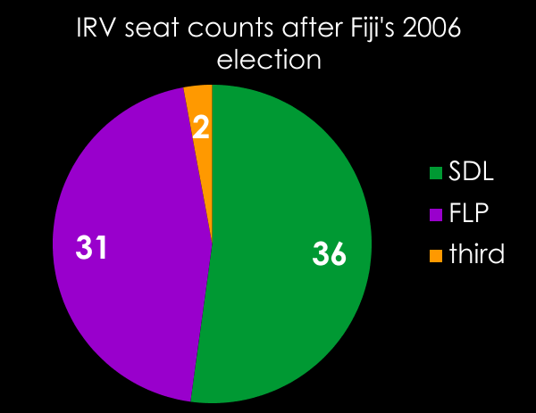

The 2005 USA Total (for the statehouses in all 50 states) was:
| Lower houses | 5411 = 2708(D) + 2687(R) + 16(other) |
| Senates | 1971 = 953(D) + 964(R) + 3(other) + 1(vacant) + 1(undecided) |
As of November 2006 (which was later data and hence slightly different party composition), the "others" included:
| 18 independent | 6 progressive | 1 green |
The Federal House in 2005 consisted of 453 total members – all of them major party except for 1 independent (Bernie Sanders). The Federal Senate in 2005 contained 100 total, all of them major party except for 1 independent (Jeffords).
THE USA GRAND TOTAL (cheating slightly by combining year-2005 federal with year-2006 state figures):
| 7935 seats, all major party except for 20 independent + 6(progressive) + 1(green). |
Asterisk: Nebraska is the only state with a unicameral legislature, and it contains only "nonpartisans." But we above have not counted them as minor-party or "other."
Sources: http://www.ncsl.org/ncsldb/elect98/partcomp.cfm?yearsel=2005 and http://www.answers.com/topic/list-of-u-s-state-legislatures and en.wikipedia.org/wiki/List_of_U.S._state_legislatures.
The USA uses plurality voting. Australia for its House instead has (since 1918) used the Instant Runoff (IRV) system. We claim IRV also leads to 2-party domination. Let's check the data. Here is the Australian statehouse+federal IRV-seat grand total:
| 564 seats, all major party except for 33(independent) + 1(one nation party). |
To compare the USA versus Australia (the larger USA figures are if the 49 Nebraskans are counted as third-party or independent; the smaller ones if they are counted as major-party):
| Percentage of | USA | Australia |
|---|---|---|
| Third-Party | 0.09% or 0.71% | 0.18% |
| Independent | 0.25% or 0.87% | 5.8% |
Conclusion: Australia(IRV seats) is slightly better for third parties (and especially for independents – most Australian and USA independents are major-party politicians who split with their parties while in office) than the USA. But both are obviously extremely hostile for third-parties. [And incidentally, the difference may largely be due to Australia's PR senate, which causes third parties to be strong in Australia despite almost never winning IRV house seats.] But if Nebraska's 49-member unicameral house is counted as third-party (which is somewhat unrealistic, although they all officially claim to be "nonpartisans") then it is the USA that is more 3rd-party-philic than Australia.
After Australia, the country that used IRV the second-most, was Fiji (just overthrown by a coup; adopted IRV in 1997-8). Two-party domination then gradually set in. By the 2006 election the stats were as follows:
Of the 71 seats, 36+31 were won by the top 2 parties, and two were won by members of a minor party. Probably if this experiment had been allowed to continue the minors would soon have been zeroed out.
In contrast: it took a lot longer than 9 years for the USA to settle into 2-party domination mode.
In both Fiji and Australia there also are seat-holders who are not affiliated with any political party. Most of them (again like in the US: Lieberman and Jeffords) are major party candidates who split with their parties. These constitute 2-6%, thus outweighing the minor parties by a lot (again as in the US).
Conclusion: Switching to IRV will still yield massive 2-party domination (perhaps slightly less massive, but still enormous) and may increase the numbers of unaffiliated seat-holders to between 2-6%.